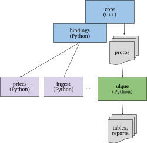

Beancount Vnext: Goals & Design
Martin Blais, July 2020
http://furius.ca/beancount/doc/Vnext
Motivation
It's time to give Beancount a refresh and to put down a concrete plan for what the next iteration of it ought to be. I've had these thoughts in the back of my mind for a long while—at least a year—and I'm putting these in writing partly to share a vision of what the product we all use to organize our finances can become, partly to solicit feedback, and partly to organize my thoughts and to prioritize well on the stuff that matters.
Current status. The current state of Beancount is that development has been static for a while now, for a number of reasons. The software is in a state that's far from perfect (and I'll be enumerating the main problems in this document) but I've been resisting making too many changes in order to provide myself and others a really stable base to work from. More importantly, while I used to be able to spend a significant amount of weekend time on its development, life changes and a focus on my career of late has made it difficult for me to justify or find the extra time (it has been 10 years after all). A multitude of ideas have aged to this TODO file but it's too detailed to grok and a bit of a dump, this document should be more useful.
Why rewrites happen. When I wrote version 2 of Beancount (a full rewrite of the first version), it was because of a confluence of ideas for improving my first draft; I resisted for a while, but eventually it made so much sense to me that it became simply impossible not to write it. Many of the ideas driving the redesign at the time are still axioms in today's design: removing order dependence, normalizing the syntax to be well-defined with a BNF grammar, converting custom processing to a sequence of plugins off of a simple stream of directives, the current design of booking selection and how cost basis works, and all the directives beyond "Transaction". These ideas largely shape what a lot of people like about using Beancount today.
Goals. Now is the time for yet another wave of evolution for Beancount, and similarly, a set of new ideas I'm going to lay down in this document form as potent a change as the v1 to v2 transition. The vision I have for Vnext will simplify Beancount, by factoring into simpler, more isolated, more reusable, better defined parts, and not merely by adding new features on top of what's there. In many ways, Vnext will be a distillation of the current system. It will also make space to finally implement some of the core features most often desired by users. And those changes will enhance some organizational aspects: allow for more contributions, and also trim down the part that I'm handling myself to less code, so I can more effectively focus on just the core features.
Current Problems
Performance
My personal ledger, and I know that the ledgers of many users, are simply too large to process instantly. My current file takes 6 seconds on the souped-up NUC I use for a desktop at home—but that's just too long. I'm really quite attached to the idea of processing the entire set of inputs every time, instead of forcing users to cut-up their ledgers into multiple files with "closing" transitions at arbitrary points in the year, but I really do want that "instant" feeling that you get when you run two-letter UNIX programs, that it runs in well under half a second. It makes it a lot more interactive and fun to use.
C++ rewrite. One of the reasons for the slow performance right now is the fact that Beancount is implemented in Python, even at the level of the parser (C code calling back into a Python driver). An obvious solution is to rewrite the core of the software in a language closer to the metal, and that will be C++. I'm selecting C++ for its control and because the current slate of tools around it is mature and widespread enough that it should be easy for most to build without too many problems, and I can leverage C libraries that I will need. Using a functional language could have been fun but many of the libraries I want simply would not be available or it would be too difficult for mere mortals to build.
Simple, portable C++. It's important to mention that the C++ code I have in mind is not in the style of template-heavy modern C++ code you'd find in something like Boost. Rather, it's a lot more like the conservative "almost C without exceptions" subset of C++ that Google uses, with a base on Abseil-Cpp (for example and flavor, see tips). The reasons for this are stability and portability, and while this rewrite is for faster performance, I believe that it will not be necessary to pull template tricks to make it run fast enough; just a straightforward port to avoid the Python runtime will likely be sufficient. Above all I want to keep the new code simple and "functional-ish" as much as possible (no classes if I can avoid it), relying on a trusted set of stable dependencies, built hermetically using the Bazel build tool.
Python API. It's also important that the Python API remains for plugins and scripts, and that the full suite of unit tests be carried over to the newer version of the code. After all, the ability to write custom scripts using all that personal finance data is one of the most attractive features of the text-based approach. Code beyond the new core implementation will remain in Python, and existing code built on top of the Python API should be very easily portable to Vnext. This can be achieved by exposing the directives with wrappers written in pybind11.
Other languages. The resolved output of the Beancount core will be a stream of protocol buffer objects, so processing from other languages (e.g., Go) will have first-class support.
Processing model. An additional algorithmic improvement to performance, should it be necessary, would be to define plugins processing in terms of iterator functions that cascade and interleave the processing of the directive stream without making entirely disjoint passes over the full list of directives. While the freedom to have each plugin process all the directives on their own has been instrumental in keeping the system free of synchronized application state and has allowed me to isolate behavior of the plugins from each other, there are opportunities to join together multiple transformations in a single pass. Fewer passes = faster.
Intermediate Parsed Data vs. Final List of Directives
In Beancount v2, I was never too careful to clearly distinguish between
-
The list of directives coming out of the parser, missing interpolation and booking, using
position.CostSpecinstead ofposition.Coston each lot, and -
The resolved and booked list of directives with booking algorithms applied to select matching lots, and interpolated values filled in, as well as transformations having been applied by the various plugins.
These two lists of directives are really quite distinct in purpose, though they share many common data structures, and for the most part, the first list appears mostly in the parser module. There have been cases where it was confusing, even to me, which of the lists I was manipulating. Part of the reason is due to how I'm using mostly the same Python data structures for both, that allow me to bend the rules on typing.
Perhaps more importantly is that because plugins run after booking and interpolation, and are required to put out fully interpolated and booked transactions, a plugin that wants to extend transactions that would run as invalid in the input syntax is difficult. See #541 for an example.
The next iteration will see both the intermediate parser production and final resolved list of directives implemented as protocol buffer messages, with strictly distinct data types. This will replace beancount.core.data. The distinction between these two streams will be made very clear, and I will try to hide the former as much as possible. The goal is to avoid plugin writers to ever even see the intermediate list. It should become a hidden detail of the implementation of the core.
Furthermore, there may be two types of plugins: a plugin that runs on the uninterpolated, unbooked output of the parser, and a plugin that runs on the resolved and booked stream. This would allow more creative use of partial input that might be invalid under the limitations of interpolation and booking.
Updates:
-
We could convert the plugin system to one that runs at booking/interpolation time.
-
We should attempt to make the booking/interpolation atomic, in that one could write a Python loop with an accumulator and invoke it independently, so that in theory, booking could be used in the importers (like I do for Ameritrade).
Make Rewriting the Input First Class
Added in Dec 2020 after comments and#586.
A number of frequently asked questions have to do with how to process the input data itself. Usually, a new user will attempt to load the contents of the ledger, modify the data structures, and print to update their file, not realizing that the printer includes all the interpolations, booking data, and modifications from plugins, so this cannot work.
However, since we're rewriting the parser and ensuring a clean separation between intermediate ASI-like data and processed and finalized directives, we can implement a special printer for the AST intermediate data, so that users could run just the parser, modify the intermediate directives, and print them back out, perhaps losing just some of the formatting and whitespace. This formatting loss can be leveraged to reimplement bean-format more naturally: the output of that printer should always be formatted neatly. This would avoid users having to write ad-hoc parsers on their input file, sed-like conversions, and so on. They could do it properly by modifying the data structure instead.
What's more, in order for this to work accurately, we'd have to delay processing of the arithmetic operations post-parsing, so that we can render them back out. This offers another advantage: if we process the calculations after parsing, we can afford to provide an option to let the user specify the precision configuration to use for mpdecimal. I really like that idea, because it avoids hard-coding calculation precision and better defines the outcome of these options, potentially opening the door to a more rational way to remove extra digits that often get rendered out.
Finally, if a nice library function can be made to process transactions in-place and output them back out, preserving all comments around them, this can become another way—perhaps the preferential way—for us to clean payees and somesuch. At the moment, the solution is to write a plugin that will clean up the data, but the input file remains a bit of a mess. Making it easy to automatically clean up the input file is an appealing alternative and potentially will add an important new dimension to the Beancount workflow.
I want to make all changes necessary to make this possible and well supported (I'm imagining my ledger file all cleaned up right now and it's appealing). I think it's not very much work, it involves:
-
Storing begin/end line information on everything.
-
Adding AST constructs for representing arithmetic calculations.
-
Adding comments parsing to the renderer.
-
Implementing a new renderer that can reproduce the AST, including handling missing data.
-
Implementing a library to make modification of a file in-place as easy as writing plugins, while preserving all non-directive data in the file as is.
Contributions
For most of the development of Beancount, I've been pretty reluctant to accept contributions. It has been a closely held pet project of mine since it has so much impact on my personal financial arrangements and I dread unplanned breakage. The main reservations I've had over contributions are two-fold:
-
Not enough testing. Proposed changes that did not include enough testing, or none at all, sometimes even the kind testing that would prevent basic breakage. When I'd accept some proposals and commit to writing the tests myself it could sometimes take me down the rabbit hole for hours (if not days). This wasn't practical.
-
Cascading design impact. Some of the proposals did not take into account broader design considerations that would affect other parts of the code, which I may not have communicated or documented well. I've had to reject some ideas in the interest of keeping things coherent and "tight."
Part of this is my fault: putting a high bar on contributions hasn't allowed potential contributors to acquire enough context and familiarity with the codebase to make changes compatible with its design.
Allowing more contributions. Starting in Vnext I'd like to restructure the project so that more people are able to get involved directly, and to closely work 1-on-1 with some contributors on particular features. Clearly Beancount benefits from direct input from more people. The recent move to GitHub only compounds the urgency for making that easier.
To this effect, I'd like to implement a few strategies:
-
Break down the code in parts. This is a natural evolution that has been seen in many other projects; I'm no Linus nor Guido, but like their respective projects, as they grew in popularity, the original authors narrowed their focus on the core part and let other people expand on adjacent but also important functionality. I'd like to focus more of my time only on core functionality that will impact things like support for settlement dates, currency accounts, split transactions, trade reporting, etc. Letting other people deal with adding or updating price sources, making improvements to the ingestion framework, and making beautiful renderings and presentations of the data would be ideal. In time, I may eventually break down these libraries to separate repositories with looser contribution guidelines and/or add ACLs for others to push directly to those repos.
-
Acquire "lieutenants." I need to leave more space for trusted and frequent contributors to chip in more liberally. For example, Martin Michlmayr now has direct edit access to most documents and has been making numerous helpful contributions and updates to the docs. Kirill Goncharov's conversion of the documentation out of Google Docs is simply beautiful. RedStreet and many others are regularly pitching in answers on the mailing-list. Stefano Zacchiroli and Martin have built a standalone conversion tool from Ledger. Daniele Nicolodi is proposing some low-level changes to the scanner and parser. And of course, Dominik Aumayr and Jakob Schnitzer continue developing the Fava project adjacent to Beancount. There are many more people, there is a slowly-but-surely growing list of familiar recurring names.
The question in my mind is: Is there a way to communicate with regular faces so that we're aligned in terms of design and can coordinate our efforts in the same direction? Does the newly acquired familiarity with video-conference meetings (thanks to the coronavirus crisis) afford us a new channel for coordination that wasn't there before? The Python community has thrived in no small part due to the annual face-to-face interactions between its participants and a number of core developers being in the same place for some time. Can we achieve the same thing online, as we are a smaller community? If so, better coordination may make it easier to accept proposed changes. I wonder if I should propose a monthly "team" meeting.
-
20% projects. I should provide a list of "20% projects" that are well aligned with the direction of the project for others to take up if they want to, and add profuse guidance and detail of downstream side-effects from those proposed features. The idea is to make it possible for newcomers to contribute changes that are likely to fit well and be easily integrated and accepted on the codebase.:
-
Proposals. Beancount's equivalents of Python's "PEPs" are essentially the Google Docs proposal documents I started from threads where many others comment and add suggestions. A central list of those should be shared to a folder, identified as such, and allow others to write similar proposals. Maybe a little more structure and discipline around those would be useful.
Restructuring the Code
At the very coarse level, the code restructuring for Vnext looks like this:
-
C++ core, parser, and built-in plugins. The Beancount core, parser, booking algorithm and plugins get rewritten in simple C++, outputting its parsed and booked contents as a stream of protobuf objects.
-
Query engine. Beancount query/SQL gets forked to a separate project operating on arbitrary data schemas, with a much broader scope than Beancount. See section below.
-
The rest. Most of the rest gets cut up into separate projects or at least, at first, in a distinct place within the repository (until the core is rewritten).
Note that because the core outputs the stream of directives as proto objects, any language supported by protobufs should be able to read those. This extends the reach of Beancount. Here's a simplified diagram showing how this might look:

Here is a detailed breakdown of the various parts of the codebase today and what I think will happen to them:
-
Core. This is the part of Beancount's code which will get rewritten in C++ and output a sequence of messages to a stream of directives. I'll continue keeping a tight focus on that part with a conservative eye toward stability, but in Vnext will be adding desired new capabilities that have been lacking so far as described in the next section of this document. The core will include the following packages:
-
beancount/core
-
beancount/ops
-
beancount/parser
-
beancount/utils
-
beancount/loader.py
-
beancount/plugins (some, see below)
-
beancount/utils (most)
-
-
Query. The query language will be factored out into a completely separate repo with a broader application domain (and hooks for customizing for Beancount). I suspect that over time that project will acquire a much broader range of contributors, many of which will not even be Beancount users. This includes the code from these packages:
-
beancount/query
-
beancount/tools
-
-
Prices. This is a simple library and tool that helps users fetch prices from external sources. This should definitely move to another repo and I'd welcome a new owner building a competing solution. People are sending me patches for new price sources and I have too little time to maintain them over time, as the upstream sources change or even disappear. This requires very little from Beancount itself (in theory you could just print() the directives for output, without even loading library code) but I think the Beancount core should include and functions to enumerate a list of required date/instrument pairs at a particular date from a given ledger (and I'm happy to support that). Note that the internal price database core will remain in the core, because it's needed there. The affected packages are:
- beancount/prices
Improvements should be made to this library after it moves out of the Beancount repository: we should isolate the Beancount code to just a few modules, and turn the scope of this project to something larger than Beancount: it's three things, really:
a) an up-to-date Python library of price fetchers with unit tests and maintained by the community (i.e., when sources break, we update the library) and a common API interface (needs to be improved from what's there TBH, the API should support fetching time series in a single call);
b) an accompanying command-line tool (currency "bean-price") for fetching those prices from the command-line. This requires the specification of "a price in a particular currency from a particular source" as a string. I'd like to improve that spec to make the USD: prefix optional, and maybe eliminate the chain of prices in the spec, which hasn't found much use in practice and move that upstream.
c) Make the interfaces to fetch ledger-related information (e.g., list of missing/required prices and lists of instruments) onto modules: beancount v2, beancount Vnext, ledger, hledger, and rendering output formats to any of these. In other words, this library should be able to fetch prices even if Beancount isn't installed. To turn this project into something that can run independent of beancount.
-
Ingest. The importers library will probably move to another repo and eventually could even find another owner. I think the most interesting part of it has been the establishment of clear phases: the identify, extract and file tasks, and a regression testing framework which works on real input files checking against expected converted outputs, which has worked well to minimize the pain of upgrading importers when they break (as they do break regularly, is a SNAFU). In the past I've had to pull some tricks to make command-line tools provided by the project support an input configuration as Python code but also possible to integrate in a script; I will remove the generic programs and users will be required to turn their configuration itself into a script that will just provide subcommands when run; the change will be very easy for existing users: it will require only a single line-of-code at the bottom of their existing files. The Bazel build may add some minor difficulties in loading a Python extension module built from within a Bazel workspace from an otherwise machine-wide Python installation, but I'm confident we'll figure it out. I'd also be happy for someone else to eventually take ownership of this framework, as long as the basic functionality and API remains stable.
The example csv and ofx importers should be removed from it and live in their own repos, perhaps:-
ofx. the OFX importer should be replaced by something using ofxtools (the one I built is pretty bad), and the CSV importer really needs a thorough rewrite with lots of unit testing for the large list of options it now supports (these tests are sorely missing).
-
csv. Furthermore, I think the CSV importer could be enhanced to be smarter and more flexible, to automatically detect from the column headers and inferred data types in the files which column should convert into which field. I'm not going to do that (I don't have time). Someone with the urge to make the ultimate automatic CSV parser ought to create a separate repository for that.
-
The affected packages are:
-
beancount/ingest : could eventually move to another repo.
-
beancount/ingest/importers: someone could revive a repository of importer implementations, like what LedgerHub once aimed to become, and swallow those codes.
See this document for details on what's to happen with the ingestion code.
-
Custom reports and bean-web should be removed: the underlying bottle library seems unmaintained at this point, Fava subsumes bean-web, and I never liked the custom reports code anyway (they're a pain to modify). I never use them myself anymore (other than through bean-web). I really think it's possible to replace those with filters on top enhanced SQL query results. The conversion to Ledger and HLedger from Beancount now seems largely useless, I'm not sure anyone's using those. I'll probably move these to another repo, where they would eventually rot, or if someone cares, adopt them and maintain or evolve them.
-
beancount/web : will be deleted or moved to another repo.
-
beancount/reports : will be deleted or moved to another repo.
-
Note that this includes deprecating
beancount/scripts/bake, which depends heavily on bean-web. I have no substitute for bean-bake, but I think I'd like to eventually build something better, a tool that would directly render a user-provided list of specific SQL queries to PDF files and collate them, something you can print.
Jupyter notebook support. A replacement for the lightweight interface bean-web used to provide could be Jupyter Notebook integration of the query engine, so that users can run SQL queries from cells and have them rendered as tables, or perhaps a super light web application which only supports rendering general SQL queries to tables.
- Built-in Plugins. Beancount provides a list of internal plugins under
beancount/plugins. It's not indicated clearly, but there have evolved two groups of plugins in there: stable plugins used by the core, and experimental plugins showcasing ideas, which are often incomplete implementations of something that was proposed from a thread on the mailing-list. The former group will be ported to C++, and the latter group should probably move to another location with much looser acceptance constraints.
First, there are "meta-plugins" which only include groups of other plugins: Only one of those should remain, and maybe be enabled by default (making Beancount pedantic by default):
-
auto
-
pedantic
The following plugins should remain in the core and be ported to C++:
-
auto_accounts
-
check_closing
-
check_commodity
-
close_tree
-
commodity_attr
-
check_average_cost
-
coherent_cost
-
currency_accounts
-
implicit_prices
-
leafonly
-
noduplicates
-
nounused
-
onecommodity
-
sellgains
-
unique_prices
The following are the experimental implementations of ideas that should move to a dedicated repo where other people can chip in other plugin implementations:
-
book_conversions
-
divert_expenses
-
exclude_tag
-
fill_account
-
fix_payees
-
forecast
-
ira_contribs
-
mark_unverified
-
merge_meta
-
split_expenses
-
tag_pending
-
unrealized
Because it's a really common occurrence, the new transfer_lots plugin should be part of the built-in ones.
-
Projects. The beancount/projects directory contains the export script and a project to produce data for a will. The will script will be moved outside the core of Beancount, I'm not sure anyone's using that. Maybe the new external plugins repo could include that script and other scripts I shared under /experimental. The export script should be grouped together with beancount/scripts/sql and other methods to send / share data outside of a ledger; these could remain in the core (I'm using the export script regularly to sync my aggregates and stock exposure to a Google Sheets doc which reflects intraday changes).
-
Scripts. Some of the scripts are completely unrelated to Beancount, they are companions. The scrape validator. The sheets upload. The treeify tool. These should be moved elsewhere.
One of the advantages of having all the code in the same repo is that it makes it possible to synchronize API changes across the entire codebase with a single commit. As such, I may keep some of the codes in the same repo until the new C++ core has stabilized, and properly separate them only when Vnext releases.
Universal Lightweight Query Engine (ulque)
The SQL query engine for Beancount was initially a prototype but has grown to become the main way to get data out of it. I've been pretty liberal about adding functionality to it when needed and it's time to clean this up and consider a more polished solution.
In Vnext, the query/SQL code gets eventually forked to a separate project (and repo) operating on arbitrary data schemas (via protobufs as a common description for various sources of data) and has support for Beancount integration. Imagine if you could automatically infer a schema from an arbitrary CSV file, and run operations on it, either as a Python library function or as a standalone tool. Furthermore, this tool will support sources and/or sinks to/from Google Sheets, XLS spreadsheets, containers of binary streams of serialized protos, tables from HTML web pages, PDF files, directories of files, and many more. This is going to be a data analysis tool with a scope closer to that of the Pandas library rather than an accounting-focused project, but also a universal converter tool, that will include the functionality of the upload-to-sheets script (which will get removed). One of the lessons from the SQL query engine in Beancount is that with just a little bit of post-processing (such as treeify), we can do most of the operations in Beancount (journals, balance sheet & income statements) as queries with filters and aggregations.
The tool will be made extensible in the ways required to add some of the idiosyncrasies required by Beancount, which are:
-
Native support for a Decimal type.
-
The addition of custom types for aggregators with the semantics of
beancount.core.Inventory/Position/Amount. -
The ability to automatically generate a dynamic column rendering a line-by-line aggregation of another column (or set thereof), that is, a "balance" column.
-
The ability to render a "bottom line" of aggregates at the end of the results table.
-
Functions for splitting of aggregated columns, for amounts and inventories into multiple columns (e..g, "123.00 USD" becomes two columns: (123.00, "USD") to be processable in spreadsheets, and also for splitting debits and credits to their own columns. In particular, printing multiple lots accumulated in an account should be made natural from the SQL query, replacing the "flatten" feature by a more standard splitting off an array type.
Moreover, broadening the focus with a new project definition will make a change to testing it thoroughly (the current one is still in a bit of a prototype stage and does not have nearly the amount of required tests), and also include data type validation (no more exceptions at runtime), by implementing a typed SQL translator. I'll document this elsewhere. This is a much bigger project, but I suspect with the broader scope, it will be easier to test and take on a life of its own.
I'm preparing a design doc on this.
API Rework
I write a lot of custom scripts, and there are a number of things that bother me about today's Beancount API, which I want to radically improve:
- Consolidate symbols under "bn". The internal API calls for importing the symbols from each package separately, but now that I'll have split off the ingestion and reporting code, all of the public API, or at least the majority of the commonly used objects in the core should be available from a single package, a bit like numpy:
import beancount as bn
…
bn.Inventory(...)
bn.Amount(...)
bn.Transaction(...)
# etc.
I'd like for "bn" to become the de-facto two-letter import on top of which we write all the scripts.
-
Default values in constructors. The namedtuple containers are mighty fine, but their constructors never had optional arguments, and it's always a bit of a dance to create those containers with a ton of "None" options. I never liked it. We'll make this tidy in the next iteration.
-
No API documentation. While there is a substantial amount of documentation around the project, there is no documentation showing people how to use the Python API, e.g. how to accumulate balances, how to create and use a realization tree, how to pull information out of an accumulated inventory object, etc. I think that documenting some of the most common operations will go a long way towards empowering people to make the most out of Beancount. Some of these operations include:
-
Accumulating lots of an inventory and printing them.
-
Converting to market value, and making corresponding account adjustments.
-
…. add more …
-
-
Exposed, usable booking. Booking will be a simple loop that can be invoked from Python with an entry and some accumulated state. Moreover, the Inventory object should begin to implement some of the lower-level operations required for booking, such that iterating over a set of postings and doing e.g., average booking, can be done via method calls on an Inventory object. Inventory should take a more prominent place in the API.
-
Data types. Well defined data types should be provided for all objects to make liberal use of the typing module over all new code. Maybe create a module called "bn.types" but they should be available directly from "bn.*" so that there is a single short-named import.
-
Terminology. I'd like to stop using "entries" and consolidate over the name "directives" in Vnext.
-
Realization. I've been using a collections.defaultdict(Inventory) and a "realization" interchangeably. Both of these are mappings from an account name (or some other key) to an Inventory state object. I'd like to unify both of these constructs into the realization and make it into a commonly used object, with some helper methods.
Parser Rewrite
Since we will now depend on C++, the parser will get to be rewritten. Worry not: the input syntax will remain the same or at least compatible with the existing v2 parser. What will change is:
-
Unicode UTF-8 support. The lexer will get rewritten with RE/flex instead of GNU flex. This scanner generator supports Unicode natively and any of the input tokens will support UTF-8 syntax. This should include account names, an oft-requested feature.
-
Flags. The current scanner limits our ability to support any flag and supports only a small list of them. I think the list has proved sufficient for use, but since I'll be putting some work into a new scanner I'm hoping to clean up that story and support a broader, better defined subset of single-letter flags for transactions.
-
Time. The parser will parse and provide a time field, in addition to the date. The time may be used as an extra key in sorting directives. The details for this are yet to be determined, but this is requested often enough at the very minimum the parser will output it as metadata, and at best, it may become a first-class feature.
-
Caching. The pickle cache will be removed. Until very recently, there weren't great options for disabling it (env vars) and I'd rather remove the only two environment variables that Beancount honors as a side-effect. Since the C++ code should be fast enough, hopefully a cache will not be needed.
-
Tags & links. In practice, those two features occupy a very similar role as that of metadata (used to filter transactions). I'm contemplating unseating the special place taken by tags and links in the favor of turning those into metadata; the input syntax would not be removed, but instead the values would be merged into the metadata fields. I'm not 100% sure yet about doing this and open for discussion. Furthermore, the parser should be made to accept #tag and ^link where metadata is declared today, which would be convenient syntax. Finally, users have expressed a desire for tags on postings. We should contemplate that.
-
Plugins configuration as protos. The options for the various plugins have been loosely defined as eval'ed Python code. This is pretty loose and doesn't provide a great opportunity for plugins to do validation nor document their expected inputs. I'd like to formalize plugin configuration syntax a bit, by supporting text-formatted protos in the input syntax (for a message type which would be provided by the plugins themselves).
-
Parser in C++. The parser will be rewritten in C++. In the process of writing Vnext, I'll try to maintain a single grammar for both for as long as possible by calling out to a C++ driver interface, which will have two distinct implementations: one for the V2 version calling into Python, and one for the Vnext parser generating protos. In the process I may be porting the lexer and grammar Python implementation to C, as discussed in this ticket.
-
Better includes. Current includes fail to recognize options that aren't in the top-level file. This caused many surprises in the past and should be fixed. At the minimum, an error should be raised.
Code Quality Improvements
-
Rename "augmentation" and "reduction" to "opening" and "closing" everywhere. This is just more common terminology and will be more familiar and understandable to people outside of our context.
-
Type annotations. The use of mypy or pytype with type annotations in Python 3 is by now a very common sight, and works quite well. As part of Vnext, all of the core libraries will be modified to include type annotations and the build should be running pytype automatically. I'll need to add this to our Bazel rules (Google doesn't currently provide external support for this). While doing this, I may relax some of the Args/Returns documentation convention, because in many cases (but not all) the type annotations are sufficient to get a good interpretation of a function's API.
-
PyLint in build. Similarly, the linter should be run as an integral part of the build. I'd like to find a way to selectively and explicitly have to disable it during development, but otherwise be set up such that lint errors would be equivalent to build failures.
-
Flexible constructors for Python API. The types generated by collections.namedtuple() or typing.NamedTuple don't offer flexible constructors with named parameters. I think all codes that create transaction objects today would benefit from having constructors with default values, and I'll be providing those to create corresponding proto objects.
Tolerances & Precision
The story around how precision and tolerances are dealt with hasn't been great, for two reasons:
-
Explicit tolerance option. I've tried to design the tolerance (used for balancing transactions) to be automatic and automatically inferred from statistics from the numbers in the input. The results aren't great. In Vnext I aim to provide an explicit option for setting the tolerance per currency.
-
Precision. There are various places where numbers get rendered in v2: the reports code, the SQL query, and debugging scripts, and the way precision is set hasn't been used consistently. The precision also needs to be explicitly settable by the user.
-
Rounding. There is another quantity that's used during interpolation: the precision used to round calculated numbers.
Moreover, there is a need to distinguish between the precision and tolerances for numbers when used as prices vs. when used as units (see here). One way is to store the display context per currency PAIR, not per currency itself.
The distinction between these quantities hasn't been documented well; I'll keep in mind to clearly annotate those codes in Vnext and add suitable docs for this. Mostly the precision will be a rendering concern and a quantity that will be relevant for the new universal SQL query tool.
Some prior design documentation exists here.
Core Improvements
Some desiderata of new features are discussed below. These are all relevant to the core. Note that the changes should not interfere with current usage much, if at all. I expect that v2 users will be largely unaffected and won't have to change their ledger files.
Booking Rules Redesign
One of the current problems with booking is that entering an augmenting leg and a reducing leg have to be different by nature. The augmentation leg has to provide the cost basis via {...} syntax, and the reducing leg has to enter the price in the annotation and not in the cost basis. For example:
2021-02-24 * "BOT +1 /NQH21:XCME 1/20 FEB 21 (EOM) /QNEG21:XCME 13100 CALL @143.75"
Assets:US:Ameritrade:Futures:Options 1 QNEG21C13100 {2875.00 USD}
contract: 143.75 USD
...
2021-02-24 * "SOLD -1 /NQH21:XCME 1/20 FEB 21 (EOM) /QNEG21:XCME 13100 CALL @149.00"
Assets:US:Ameritrade:Futures:Options -1 QNEG21C13100 {} @ 2980.00 USD
contract: 149.00 USD
...
Notice how the selling transaction has to be written down differently from the perspective of the user. The thing is, this makes it difficult from the perspective of the importer writer. It also ties the required syntax with the state of the inventory it's applied to, as it assumes something about this inventory.
Moreover, this makes it difficult to write an importer that would handle a crossing of the absolute position, like this:
2021-02-19 * "BOT +1 /NQH21:XCME @13593.00"
Assets:US:Ameritrade:Futures:Contracts 1 NQH21 {271860.00 USD}
contract: 13593.00 USD
Assets:US:Ameritrade:Futures:Margin -271860.00 USD
Expenses:Financial:Commissions 2.25 USD
Expenses:Financial:Fees 1.25 USD
Assets:US:Ameritrade:Futures:Cash -3.50 USD
2021-02-19 * "SOLD -2 /NQH21:XCME @13590.75"
Assets:US:Ameritrade:Futures:Contracts -2 NQH21 {271815.00 USD}
contract: 13590.75 USD
Assets:US:Ameritrade:Futures:Margin 543630.00 USD
Income:US:Ameritrade:Futures:PnL 45.00 USD
Expenses:Financial:Commissions 4.50 USD
Expenses:Financial:Fees 2.50 USD
Assets:US:Ameritrade:Futures:Cash -52.00 USD
The issue here is that we're crossing the flat line, in other words, we go from long one to short one. There are only two ways to do that properly right now:
-
Disable booking and use the cost only, as per above. This is not great — booking is terribly useful.
-
Track the position in your importer and separate the reducing and augmenting legs:
2021-02-19 * "SOLD -2 /NQH21:XCME @13590.75"
Assets:US:Ameritrade:Futures:Contracts -1 NQH21 {} @ 271815.00 USD
Assets:US:Ameritrade:Futures:Contracts -1 NQH21 {271815.00 USD}
Both solutions aren't great. So I came up with something new: a complete reevaluation of how the syntax is to be interpreted. In fact, it's a simplification.
What we can do is the following: use only the price annotation syntax for both augmentation and reduction and currency conversions, with a new booking rule —
-
Match lots without cost basis in priority. If the lots have no cost basis, the weight of this posting is simply the converted amount, as before.
-
If a match has been made against a lot with cost basis, the weight of this posting is that implied by the matched lots.
-
Make the {...} used solely for disambiguating lots to match, and nothing else. If you have unambiguous matches, or a flexible booking strategy, e.g. FIFO, you'd pretty much never have to use the cost matching reduction.
With this, the futures transaction above would simply use the @ price annotation syntax for both transactions. It would
-
Make importers substantially simpler to write
-
Supports futures naturally
-
Be backward compatible with existing inputs for both currency conversions and investments.
It is also more generally consistent and friendlier to Ledger users, without sacrificing any of the tighter constraints Beancount provides. I think it's even simpler to think about.
Furthermore, this:
Assets:US:Ameritrade:Futures:Contracts -1 NQH21 {} @ 271815.00 USD
would be interpreted as "match this lot, but only those with a cost basis attached to them."
One question that remains is to decide whether an augmentation — now written down simply with @ price annotation — would store the cost basis in the inventory or not. I think we could make this determination per-commodity, or per-account. This would impose a new constraint: a commodity (or "in an account") would always be stored with cost basis, or not.
Posting vs. Settlement Dates
When you import a transaction between multiple accounts within a single ledger, e.g. a credit card payment from one's checking account, the dates at which the transaction posts in each account may differ. One side is called the "transaction date" or "posting date" and the other side the "settlement date." Where the money lives in between is somewhere in limbo (well in practice there is no money at all, just differences in accounting between institutions, things are never reflected instantly).
One of the major shortcomings of the current core code is that the ability to insert a single transaction with postings at different dates is missing. Users are recommended to select a single date and fudge the other one. Some prior discussion on this topic exists here. Unfortunately, this method makes it impossible to represent the precise posting history on at least one of the two accounts.
A good solution needs to be provided in Vnext, because this is a very common problem and I'd like to provide a system that allows you to precisely mirror your actual account history. The automatic insertion of transfer accounts to hold the commodities can be implemented as a feature, and it should live in the core.
One possible idea would be to allow optional posting dates, like this:
2020-01-19 * "ONLINE PAYMENT - THANK YOU" ""
Assets:US:BofA:Checking -2397.72 USD
2020-01-21 Liabilities:US:Amex:BlueCash 2397.72 USD
which would result in two transactions behind the scenes, like this:
2020-01-19 * "ONLINE PAYMENT - THANK YOU" ""
Assets:US:BofA:Checking -2397.72 USD
Equity:Transfer
2020-01-21 * "ONLINE PAYMENT - THANK YOU" ""
Liabilities:US:Amex:BlueCash 2397.72 USD
Equity:Transfer
The lack of symmetry here raises the question of whether we should allow a transaction without a date or not:
* "ONLINE PAYMENT - THANK YOU" ""
2020-01-19 Assets:US:BofA:Checking -2397.72 USD
2020-01-21 Liabilities:US:Amex:BlueCash 2397.72 USD
I think we can figure this out and the first solution is very doable.
Input Split Transactions
Some users like to organize their inputs in different files, or in different sections that strictly contain all of an account's transactions in order. This is related in spirit to the posting and settlement dates problem: at the moment the user is required to choose one of the two locations to insert their transaction.
This should not be necessary. We should provide a mechanism that would allow users to insert the halves of a transaction into two different locations in their file, and a robust merging mechanism that would ensure that the two related transactions have been matched and merged (so that no unmerged half remains) and otherwise report errors clearly.
The two halves could look like this:
2020-01-19 * "ONLINE PAYMENT - THANK YOU" ""
Assets:US:BofA:Checking -2397.72 USD
…
2020-01-21 * "AMEX EPAYMENT ACH PMT; DEBIT"
Liabilities:US:Amex:BlueCash 2397.72 USD
The matching could be done via explicit insertion of special links, or by heuristics to match all such related transactions (perhaps declaring valid account pairs, thresholding on date differences and exactly matching amounts). When impossible to match, an error should be raised. Those merged transactions should be checked for balancing.
Note how each of the transactions has a differing date; this would integrate with the transfer account solution proposed in the previous section.
I haven't designed something yet, but this should be easy to implement and should be provided as a core feature, since it's so closely related to the input syntax.
Currency Accounts instead of a Single Conversion
The current implementation of multiple currency transactions relies on a special "conversion transaction" that is automatically inserted at reporting time (when closing the year) to account for the sum total of imbalances between currencies. The goal of this transaction is to ensure that if you just sum up all the postings in the book, the result is purely an empty inventory (and not some residual amount of profit or loss incurred during currency exchange across different rates — note that we're talking only of the @price syntax, not investments). This is a bit of a kludge (the transaction itself does not balance, it converts to zero amounts of a fictional currency in order to keep itself quietly passing the balance test). What's more, its actual value is dependent on a subset of filtered transactions being summed up so it's a reporting-level construct, see here.
There exists a method for dealing with multiple currencies without compromising on the hermeticity of individual transactions, described online, here. Using that method, you can filter any subset of transactions and summing them up will cleanly cancel out all lots. You don't need to insert any extra weight to fix up the balance. Also, you can explicitly book profits against the accrued gains in the currency accounts and zero them out and take advantage of this when you report them (and track them over time). The downside is that any currency conversion would see extra postings being inserted, etc.
2020-06-02 * "Bought document camera"
Expenses:Work:Conference 59.98 EUR @ USD
Liabilities:CreditCard -87.54 USD
Equity:CurrencyAccounts:EUR -59.98 EUR
Equity:CurrencyAccounts:USD 87.54 USD
The problem is that it's a pain to use this method manually, it requires too much extra input. It's possible to have Beancount do that for us behind the scenes, completely automatically. I coded a proof-of-concept implementation here, but it's incomplete.
In Vnext:
-
The insertion of the kludgey conversions transactions should be removed.
-
The currency accounts should become the norm. The fact that the two streams of directives will be very clearly separated should help, by distinguishing even more clearly between the parsing representation and the fully booked one, which will show these extra legs on transactions
-
The prototype should be completed and issues fixed completely (not that much work involved).
Strict Payees
I'm not sure if this makes sense yet, but I'd like to clean up the mess that payee strings are today. Payees are free-form, and if the user does not take care to clean them up—and I'm one of those who doesn't—the memos from imported sources are messy.
It could be interesting to create a new directive to declare payee names ahead of time and an optional model that would require payees to be found in the list of declared payee names. Payees would have to have open and close dates, dates which would define the valid duration of the relationship with that payee (thereby adding more error verification capability).
Price Inference from Database
Interpolation from price database. One of the oft-requested features is the ability to automatically interpolate prices from the internal price database history. I think that this should be doable unambiguously and deterministically and added to the interpolation algorithm.
Price validation. Since a lot of the conversions at price (i.e., using "@") are inferred by leaving out one number, we should validate that the effective price is within some tolerance of a pre-existing price point near the date. This would provide yet another level of checking.
Quantizing Operators
Another useful addition to the syntax would be operators that automatically quantize their result to a precision that depends on the particular target currency. For example,
1970-01-01 * "coffee"
Expenses:Food:Net 2.13 / 1.19 EUR
Expenses:Food:Taxes 2.13 / 1.19 * 0.19 EUR ; for example to calculate tax
Assets:Cash
That would become:
1970-01-01 * "coffee"
Expenses:Food:Net 1.789915966386555 EUR
Expenses:Food:Taxes 0.340084033613445 EUR
Assets:Cash
If instead an operator like this were provided, it would fix the issue:
1970-01-01 * "coffee"
Expenses:Food:Net 2.13 /. 1.19 EUR
Expenses:Food:Taxes (2.13 / 1.19 * 0.19). EUR
Assets:Cash
Or somesuch. Or maybe we'll want to add an option such that every evaluation of an arithmetic expression is automatically quantized as such.
Constraints System & Budgeting
Beancount does not support budgeting constraints explicitly, but I think it would be possible to extend the balance assertion semantics to cover this.
The current balance assertions check (a) a single commodity, and (b) that the amount is precisely equal to an expected one. Balance assertions should be extended to support inequalities, e.g.,
2020-06-02 balance Liabilities:CreditCard > 1000.00 USD
and perhaps we could check for the total inventory like this
2020-06-02 balanceall Assets:Cash 200.00 USD, 300.00 CAD
I'd be curious to hear what would work best from users who do budgeting and design a minimalistic expression language to support that use case (though I'd try to keep it as simple as possible to avoid feature creep). Also, if the syntax is getting changed, adding a syntax that allows checking multiple currencies at once, and possibly a complete assertion that checks there aren't other commodities in the account could also make sense.
Average Cost Booking
Average cost booking has been discussed and a good solution sketched out a very long time ago. Vnext should sport that method natively; a lot of users want to have this feature for dealing with their tax-deferred accounts. It takes a bit of work to handle the precision of the various automated conversions right.
The way it would work is by automatically merging all related lots of the same commodity on a reduction, and optionally on an augmentation. Some constraints may be required (e.g. only a single commodity in that account).
Trade Matching & Reporting
A few core tasks related to P/L and trading still need to be implemented.
- Trade list. A problem that I've really been wanting to solve for a very long time but never found the time for is to save crumbs from the booking process so that a correct list of trade pairs could be easily extracted from the list of directives. I wrote some notes here and here a long time ago. Essentially, for each booked reduction, insert a reference to the corresponding augmenting posting. I've prototyped this as metadata but it should be made something more official. A single linear scan can pick up these references, build a mapping and recover the (buy, sell) pairs to produce a table of trades. There's a precedent I once wrote in a plugin.
Needless to say, producing a list of trades is a pretty basic function that Beancount does not provide out of the box today; it really should. Right now users write their own scripts. This needs to be supported out-of-the-box.
-
Harmonize balance and gains validation. Checking that transactions balance and that income from gains balance with a transaction's prices (the sellgains plugin) are done in completely separate places. Those two codes occupy similar roles, and should be implemented next to each other.
-
Commissions in P/L. Properly counting profits & losses by taking off the fraction of buying commission of an original lot and the selling commission into account is not possible at the moment. I think it could be done with a plugin that moves some of the (computed) income leg into a separate negative income account to do this properly for reporting purposes.
Self-Reductions
Currently the application of reductions operates on the inventory preceding the transaction. This prevents the common case of self-reductions, and both I and some users have come across this problem before, e.g. this recent thread (ticket). This comes off as unintuitive to some users and ought to have a better solution than requiring splitting of transactions.
Since we're rewriting the booking code entirely in Vnext, contemplate a new definition that would provide a well-defined behavior in this case. I remember from prior experiments attempting to implement this that it wasn't a trivial thing to define. Revisit. This would be a nice improvement.
Stock Splits
Some discussion and perhaps a strategy for handling stock splits should be devised in Vnext. Right now, Beancount ignores the issue. At the minimum this could be just adding the information to the price database. See this document for more details.
Multipliers
Options have a standard contract size of 100. Futures have a contract size that depends on the particular instrument (e.g., /NQ with a multiplier of 20).
I've been handling this for options by multiplying the units by 100, and for futures by multiplying the contract size by the per-contract multipliers (ditto for options on futures). I do this in the importers. For options, it works and it isn't too bad (e.g. positions of -300 instead of -3), but for futures, it's ugly. The result is not representative of the actual transaction.
I'd like to add a per-currency multiplier, as well as a global dictionary of regexps-to-multiplier to apply, and for this to be applied everywhere consistently. One challenge is that everywhere there's a cost or price calculation, this has to be applied. In the current version, those are just multiplications so in many parts of the codebase these haven't been wrapped up in a function that could easily be modified. This needs to happen in a big rewrite — this is the opportunity to do this.
Returns Calculations
If you look at investment brokers out there, no one calculates returns correctly. Brokers provide one of two features:
- No cash transfers. Total value of account today vs. total value of account at some point in the past (i.e., account inception or beginning of the year). This isn't very useful because they never account for the addition or removal of cash to the account. For example, say you open an account with $100,000 and invest, and mid-year add another $20,000, say the original investments are now worth $95,000, the report would show a gain of $15,000, whereas you really incurred a loss. Better brokers like Vanguard will show a plot that includes two overlaid bars, one with cash added and profit overlaid, like this:
- Lack of interest or dividends. Other brokers will report P/L over time from the investments, but they fail to account for actual interest or dividends received (they only look at the price of the underlying) so that's not useful for bonds or for stocks with significant dividends, or when grouping them, they fail to account for the addition of new positions over time.
Counterfactual performance. Finally, all of them fail to compare your actual annualized performance with that of a benchmark portfolio with equivalent cash infusions. For example, instead of your actual investments made, compare with the performance you would have obtained if you had invested in some standardized portfolio of investments over that particular time period, given the actual historical prices of those instruments. Ideally one should be able to define any alternative portfolio to compare against using their particular cash transfers.
More fancy analyses aren't even contemplated, e.g., what would have been the impact of changing my rebalancing strategy (or actually implementing a more strict one)?
There are well known methods for both time-based and value-based returns reporting. The right thing to do is to extract a time-series of cash flows and compute the annualized or IRR returns, or value-weights.
I started this work at some point and ran against some difficulties and eventually removed it. The results remain here. I'd really love to build this, and eventually perhaps this could grow into its own project, with associated support functions in the Beancount core. This will possibly be a project of its own, but this requires similar support for enumerating instruments and price sources as that which is needed for fetching prices, as well as functions for isolating cash flows for specific subsets of accounts; these should probably live in the core.
UPDATE September 2020: This has mostly been implemented. See this document for details.
Unsigned Debits and Credits
A useful idea that's nearly trivial to implement is to allow users to input all positive unit numbers and to automatically flip the signs on input, and to output them all as positive numbers as well splitting them up between Debit and Credit columns. This would make Beancount's rendering a lot easier to grok for people with an existing background in accounting. This feature will introduce no complexity, easy to add for free. See TODO here.
Holdings
One of the libraries I built at some point was this notion of a "holding", here. At the time I wasn't sure if that data would contain much more than what's in a posting, but as it turns out, representing holdings as just the posting is good enough, all you need is the market value, and compute the total values from the units is trivial. In fact, I've haven't been using that code for years, I've been using the export script instead, which writes out a table that gets uploaded to a Google Sheets doc. This proves to me aggregating the positions in an Inventory is plenty sufficient in practice, along with a mapping of latest market prices.
I'm going to delete that code. It's only been used in the reports code anyway, which will be removed anyway, and in the experimental "unrealized gains" plug, which was only a proof-of-concept that convinced me booking such gains as transactions is not a good idea and which will get removed and live in a separate experimental repository anyway.
Tooling for Debugging
Context should recover erroneous transactions. One of the major annoyances of error recovery is that if a transaction involves some types of errors, the postings aren't produced in the stream of directives. This problem is related to the lack of clarity between the merely parsed data structure and the fully resolved one. In particular, this means that the "bean-doctor context" debugging command often cannot provide useful context around a failing transaction. This really needs to be fixed, to improve debuggability.
Document debugging tools. In general, I should write a better exposition of how to use the various transaction debugging tools; a lot of the questions on the mailing-list would disappear if users knew better how to leverage those.
Interactive context in Emacs. If the performance allows it, we could build an Emacs mode which renders the context around a partially written transaction, including inventories of the affected accounts before and after the transaction, as well as interpolated values, to a different buffer updated interactively. This would make it much more fun to input data and provide immediate feedback about the newly inserted transaction.
Documentation Improvements
Remove dependency on furius.ca. The current Google Docs based documentation links to other documents via a global redirect (the definition is found here). While it does not happen often that my web server goes down (perhaps a few times per year), when it does it takes a few days to rectify the situation. That server is hosted graciously in the company of some friends of mine.
Kirill has proved that it would be possible to replace all the links to redirects on github, that would look like this: beancount.github.io/<document> instead of furius.ca/beancount/doc/<document>. In order to do this, I'll need to run a script using the Docs API on all the Google Docs to change them automatically.
Conclusion
There are other items in the TODO file. These are just the main, big issues that I think matter the most and I'd like to address them in a Vnext rewrite.
Development branches will look like this:
-
v2: Current master will be branched to "v2", which will track the stable current version.
-
That branch will build with both the current setup.py system and Bazel.
-
Fixes will be implemented on that branch where possible, and merged to Vnext.
-
-
master: Current master will become Vnext.
- Only the Bazel build will be supported on that branch.
Any comments appreciated.
Appendix
More core ideas for Vnext that came about during discussions after the fact.
Customizable Booking
For transfer lots with cost basis… an idea would be to create a new kind of hook, one that is registered from a plugin, e.g. a callback of yours invoked by the booking code itself, and whose results applied to a transaction are immediately reflected on the state of the affected inventories. Maybe this is the right place to provide custom algorithms so that their impact is affecting the subsequent inventories correctly and immediately. Now, imagine generalizing this further to provide and implement all of the current booking mechanisms that are currently built in the core. Call this "customizable booking." (thread).
Ugly Little Things
-
print_entry() uses buffering that makes it impossible to use regular print() interspersed with the regular stdout without providing file= option. Fix this, make this regular instead, that's just annoying, just print to regular stdout.
-
The default format for __str__ for inventories puts () around the rendering. When there's a single position, that looks like a negative number. That's dumb. Use {} instead, or something else.
-
Add a flag to bean-check to make it run --auto plugins by default. This is great for imported files, which may not have a complete ledger to feed in.
Incremental Booking/ Beancount Server / Emacs Companion
In order to make recomputation fast, the idea of creating a standalone "Beancount server" starts to make sense. The expensive part of the Beancout calculations on a large file is the booking and interpolation. The key to making things fast is thus to keep all the original unprocessed transactions in memory along with the booked and interpolated ones, and on a change, reparse the modified files and scan all the transactions, updating only the ones whose accounts have been affected.
This could be problematic in theory: some plugins may rely on non-local effects in a way that affects what they output. I believe in practice it would work 99% of the time. But I think it may be worth a prototype. On the other hand, Vnext may turn out to be fast enough recomputing everything from scratch every single time (my own file went from 4s -> 0.3ms for the parsing stage of the largest file), so maybe this is irrelevant overall.
Such a server would be a perfect companion to a running Emacs. We could build an Emacs mode which communicates with the server.
Tags & Links Merge with MetaData
TODO(blais): Add colon syntax